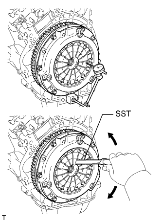

ЗАДНИЙ САЛЬНИК КОЛЕНЧАТОГО ВАЛА > УСТАНОВКА |
| 1. УСТАНОВИТЕ ЗАДНИЙ САЛЬНИК КОЛЕНЧАТОГО ВАЛА |
Нанесите универсальную консистентную смазку на кромку нового сальника.
С помощью SST и молотка запрессуйте новый сальник так, чтобы его поверхность была заподлицо с краем стопора заднего сальника.
| 2. УСТАНОВИТЕ ВЕДУЩИЙ ДИСК И КОРОННУЮ ШЕСТЕРНЮ В СБОРЕ (для моделей с автоматической трансмиссией) |
Зафиксируйте коленчатый вал с помощью SST.
 |
Установите переднюю распорную втулку, ведущий диск и заднюю распорную втулку на коленчатый вал.
| *1 | Передняя распорная втулка |
| *2 | Ведущий диск и коронная шестерня |
| *3 | Задняя распорная втулка |
 | Сторона автоматической трансмиссии |
Нанесите герметик на 2-3 витка резьбы и концы 8 болтов.
 |
В несколько этапов вверните и равномерно затяните 8 болтов. Последовательность затяжки показана на рисунке.
| 3. УСТАНОВИТЕ МАХОВИК В СБОРЕ (для моделей с механической трансмиссией) |
Зафиксируйте коленчатый вал с помощью SST.
Временно закрепите маховик 8 болтами.
Установите 8 установочных болтов и затяните их равномерно в несколько этапов.
| 4. УСТАНОВИТЕ ВЕДОМЫЙ ДИСК СЦЕПЛЕНИЯ В СБОРЕ (для моделей с механической трансмиссией) |
 |
Вставьте SST в ведомый диск сцепления, а затем установите SST с ведомым диском сцепления на маховик.
| Со стороны маховика |
| 5. УСТАНОВИТЕ КОЖУХ СЦЕПЛЕНИЯ В СБОРЕ (для моделей с механической трансмиссией) |
 |
Совместите метки на кожухе сцепления и маховике.
| *a | Метка |
Затяните 6 болтов в последовательности, показанной на рисунке, начиная с болта, который располагается сверху рядом со штифтом.
| 6. ПРОВЕРЬТЕ И ОТРЕГУЛИРУЙТЕ КОЖУХ СЦЕПЛЕНИЯ В СБОРЕ (для моделей с механической трансмиссией) |
|  |
С помощью индикатора часового типа с роликовым датчиком проверьте отклонение конца диафрагменной пружины.
| 7. УСТАНОВИТЕ АВТОМАТИЧЕСКУЮ ТРАНСМИССИЮ В СБОРЕ (для моделей с автоматической трансмиссией) |
Установите автоматическую трансмиссию (Нажмите здесь).
| 8. УСТАНОВИТЕ МЕХАНИЧЕСКУЮ ТРАНСМИССИЮ В СБОРЕ (для моделей с механической трансмиссией) |
Установите механическую трансмиссию (Нажмите здесь).